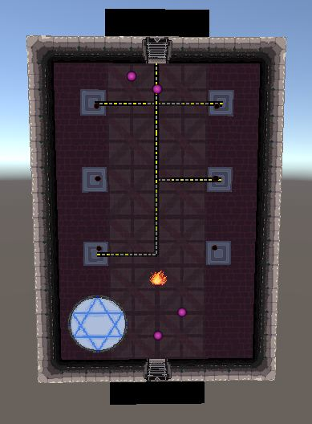

Overthrone

Overthrown is a game worked on by Tanner Fred and the rest of his team during the 2020 Fall Semester at Michigan State University. This picture is an example of the torch puzzle that he designed in conjuction with introducing a new "fire charm" mechanic into the game.